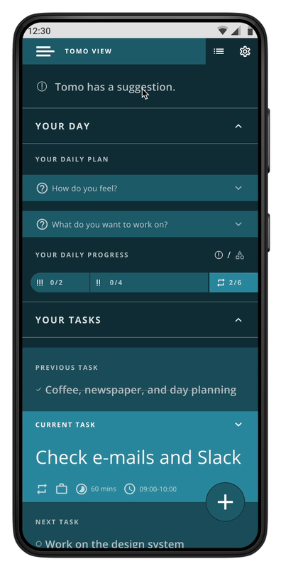
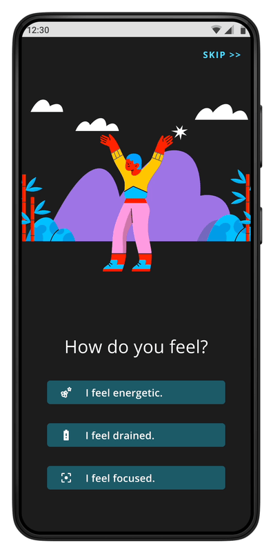

Based on my research, I have concluded that a time management product that I would be designing ought...
Automatic dynamic scheduling enters!
While conducting competitive analysis, I had come across some products with partially automated schedule making (e.g., Reclaim.ai), but I noticed that they were not making the best use of a feature with a business opportunity with immense value.
After a brainstorming process, I have come up with a task prioritization and sorting algorithm, computationally so simple, that even a beginner like me can code, which I call Automated Dynamic Scheduling.
The algorithm re-queues user tasks based on user inputs (task actions, energy level, task categories) and task properties (due date and time, priority, and appx. time to complete), and further, this can be achieved only with a few clicks, any time the user wants.
In cases where the algorithm has only partial information, the product would prompt the user, asking them to choose between equal options.
So, the user would focus only on the current task which is the highest priority task with the closest deadline, and would not be prompted by Tomo unless there is an absolute necessity, e.g., they will miss a deadline for another task if they do not complete their current task shortly.
"A to-do list with just one task on it reflects a strategic and intentional choice about what you will do next, and continue to focus on until it’s done. It might feel silly, but writing that one thing down on its own list is the key—it makes it a commitment that you’re far more likely to follow through on. Make meaningful progress, one task at a time." - Peter Bregman
Usability test
After I had completed Tomo's first prototype at the end of my two-week solo design sprint, it was finally time to test it with users, so the following questions in my mind would be answered. So, I conducted an online unmoderated usability test in which six participants would complete six tasks and answer two additional questions. The tasks they were asked to complete are as follows.
- 1How easy or hard is it to complete the most common actions of the app?
- 2Given Tomo has a different interface than most similar products per its functionality, how well or poorly would users find it?
- 3Which of the two different "daily onboarding" flows would users prefer?
| Task |
Avg. Duration |
Avg. Score |
| Let Tomo know how you feel and pick task categories to work on. |
81.45 seconds |
3.33/5.00 |
| Complete this daily onboarding flow. |
30.70 seconds |
4.66/5.00 |
| Check Tomo's suggestion and take an action. |
96.14 seconds |
4.16/5.00 |
| Delete your current task. |
16.44 seconds |
4.50/5.00 |
| Check a future task. |
28.51 seconds |
4.66/5.00 |
| Mark a future task as completed on List View. |
40.73 seconds |
4.50/5.00 |
At the end of the usability test, each test participant was asked if they had any suggestions or feedback regarding their experience using Tomo, and some were kind enough to provide several actionable items.
A/B testing two flows
As I was not able to decide between two "daily onboarding" flows, the most important insight that I was looking for from this usability test was the test participants' choices on them:(i) which one they would rate higher (or lower), (ii) which one they would state to prefer, and (iii) which one they would take shorter (or longer) to complete.


Flow A
Avg. completion time: 81.45 secs.
Avg. score: 3.33/5.00
Flow B
Avg. completion time: 30.70 secs.
Avg. score: 4.66/5.00
USERS'S CHOICE 🏆
*Flow B was designed merely for test purposes. See the final daily onboarding flow below.